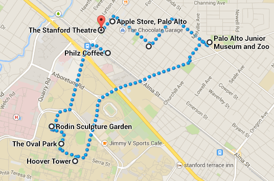
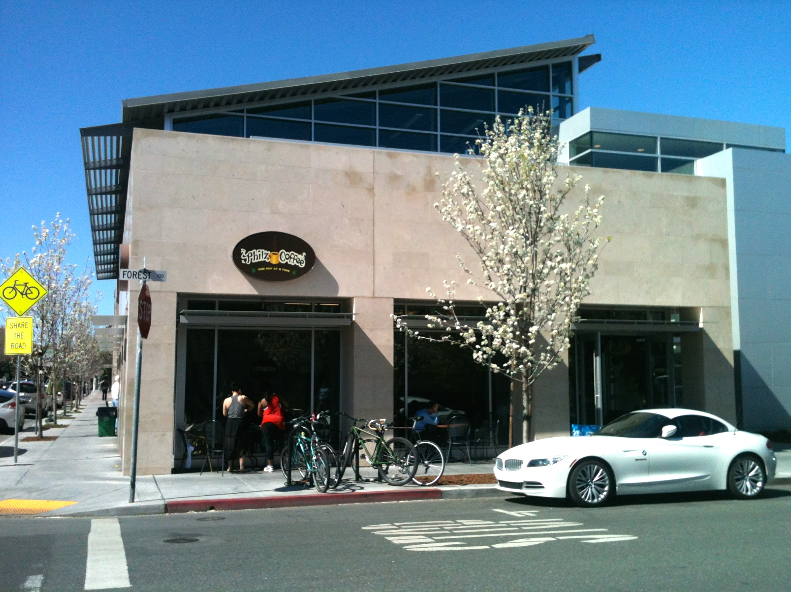

Walk Palo Alto
a self-guided walking tour of palo alto
Estimated Time: 4-6 hours
Total Mileage: 6.0 miles

Start: Philz Coffee

- Started by Phil Jaber in 2003
- Each cup of coffee is individually brewed
- If you don't love the taste of coffee, I
suggest a mint mohito iced coffee
Rodin Sculpture Garden


The Oval Garden


Hoover Tower


Steve Job's House


Palo Alto Children's Museum & Zoo


Hewlett-Packard Garage


Final Destination: Stanford Theatre